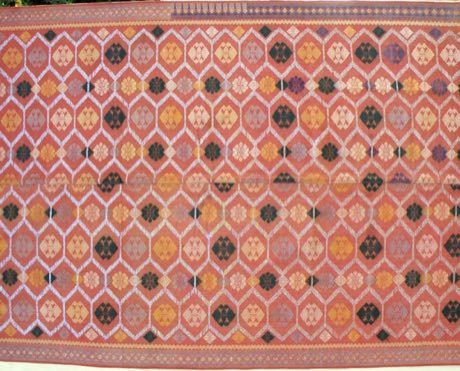

Home / Living Traditions / Southeast Asia and the Islands
Encyclopedia ID 320
Songket
Also known as supplementary-weft gold weaving


Lift selected warp threads and pass gold weft to build a motif row by row on a loom.
Heritage note
Part of the living heritage of Malaysia, Brunei, Indonesia.
Origins
A living tradition passed from person to person; it is not tied to a single dated origin. It belongs to the cultural world of Southeast Asia and the Islands.
Sources
Related entries

Batik wax-resist pattern studio
Indonesia +1 · Crafts and making
Ketupat
Malaysia +2 · Crafts and making
Lao silk brocade weaving
Laos · Crafts and making
Tais
Timor-Leste · Crafts and making
Banig mat weaving
Philippines · Crafts and making
Kente strip weaving
Ghana · Crafts and making
More from Malaysia

Bakiak
Indonesia +2 · Racing
Dikir barat
Malaysia · Street and playground games
Egrang
Indonesia +1 · Racing
Gasing uri
Malaysia · Dexterity and skill games
Gobak Sodor
Indonesia +1 · Board and table games
Kaapse Klopse
Malaysia +1 · Street and playground games